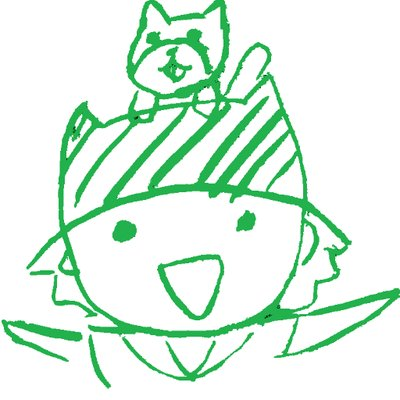

あいてにあむ
所属 立命館大学 情報理工学部
画像・音メディアコース 3回生
立命館コンピュータクラブ
自己紹介
GASでスプレッドシート自動化スクリプトや簡単なWebアプリをよく作ります．
よく書く
GoogleAppsScript / JavaScript /
HTML / CSS
たまに書く
C / Java / VBA
skill
画像処理
C言語で画像のエッジ検出・パターンマッチングなど / metasequoiaでCG作成 / OpenGL + C言語でCG
音声処理
C言語で低域・高域通過フィルタ設計や周波数・音の高さ分析など
major
github
products
twitter
links